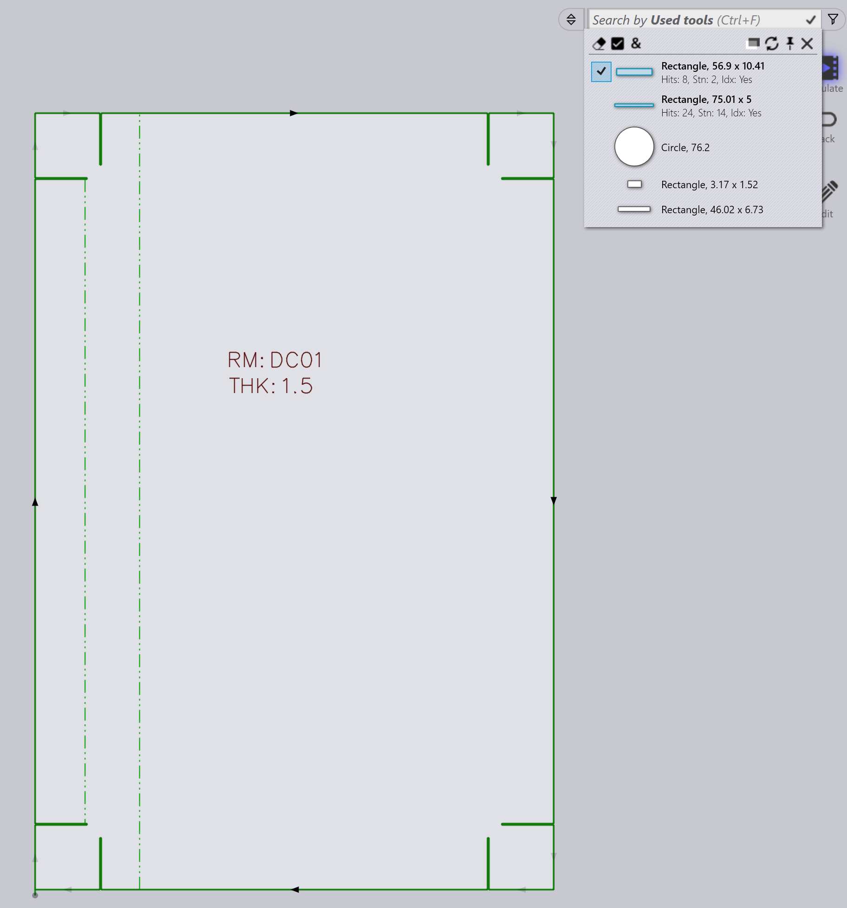

Part filters
ฟิลเตอร์ Part Library ช่วยให้คุณสามารถค้นหาและระบุตำแหน่งชิ้นงานใน library ได้อย่างรวดเร็วโดยการใช้เงื่อนไขเฉพาะ โดยการจำกัดผลลัพธ์ให้เหลือเฉพาะชิ้นงาน ที่ตรงตามเกณฑ์ของคุณ ฟิลเตอร์เหล่านี้ทำให้ง่ายต่อการจัดการและเข้าถึง ชิ้นงานที่เกี่ยวข้องอย่างมีประสิทธิภาพ

สถานะ
-
ใช้ฟิลเตอร์ สถานะ เพื่อค้นหาชิ้นงานตามสถานะทูลลิง
-
แบบเลื่อนลงจะแสดงสถานะทูลลิงเป็นกล่องสีและเครื่องจักรที่มีอยู่ทั้งหมด และข้อผิดพลาดที่ใช้ได้
-
กล่องสีแสดงถึงสถานะต่อไปนี้:
-
สีขาว: ทูลลิงเรียบร้อย
-
สีส้ม: ทูลลิงมีข้อผิดพลาด
-
สีเหลือง: ทูลลิงมีคำเตือน
-
สีเทา: ทูลลิงถูกระงับ
-
-
หากชิ้นงานมีข้อผิดพลาด narrow flange หรือ tooling not assigned การเลือกสิ่งเหล่านี้ จะแสดงชิ้นงานที่เกี่ยวข้อง

-
ชิ้นงานที่มีทูลลิงที่ถูกระงับบนเครื่องจักรที่เลือกจะแสดงโดยการคลิกที่กล่องสีเทา

จุดยึดการดัด
-
ใช้ฟิลเตอร์ จุดยึดการดัด เพื่อค้นหาชิ้นงานตามเครื่องมือดัดที่ใช้
-
แบบเลื่อนลงจะแสดงเครื่องมือดัดที่มีอยู่ทั้งหมดและสามารถกรองตามชื่อเครื่องมือ ประเภท (punch, gooseneck, radius ฯลฯ) หรือคำอธิบาย
-
เลือกหลายเครื่องมือและคลิก ตรงทั้งหมด|&** เพื่อจัดเรียงเครื่องมือที่ใช้ เครื่องมือที่เลือกทั้งหมด

เครื่องมือที่ใช้
-
การกรองตาม เครื่องมือที่ใช้ ทำงานคล้ายกับการกรองตาม จุดยึดการดัด
-
ไอคอนเครื่องมือจะแสดงในขนาดตามสัดส่วน (ไม่ใช่ขนาดที่แน่นอน แต่เป็นขนาดสัมพัทธ์)
-
เมื่อเปิดตัวอย่างทูลลิง การนำเมาส์ไปชี้ที่เครื่องมือในรายการ ฟิลเตอร์จะไฮไลต์เครื่องมือนั้นในหน้าต่างตัวอย่าง
-
สามารถเลือกหลายเครื่องมือและใช้โดยใช้ ตรงทั้งหมด|&**

สถานะ
-
ใช้ฟิลเตอร์ สถานะ เพื่อค้นหาชิ้นงานตาม สถานะปัจจุบัน
-
แบบเลื่อนลงจะแสดงสถานะที่ใช้ได้ทั้งหมดขึ้นอยู่กับชิ้นงานใน library ที่ มีอยู่
-
รายการสถานะจะเปลี่ยนแปลงแบบไดนามิกตามชิ้นงานที่เลือก และสถานะของมัน
-
ตัวอย่างเช่น เลือก Material Missing เพื่อดูชิ้นงานในสถานะ วัสดุที่ยังไม่ได้รับการแก้ไข